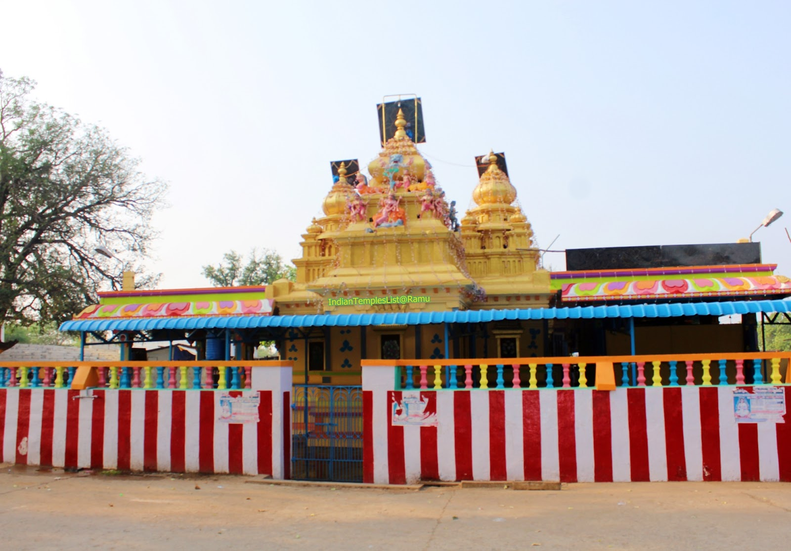

Sri Vengamamba Temple

Temple Name: Sri Vengamamba Temple
History: The Sri Narrawada Vengamamba Devestanam is a 300-year-old temple. This temple is famous in the surrounding area, and is dedicated to the Goddess Sri Vengamamba, a wish-satisfier goddess. The temple's festival conducted each year in the months of June and July, called Sri Vengamamba Tirunala, is visited by more than 5 lakhs (500,000) Pilgrims from South Indian states.
Maps